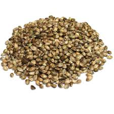
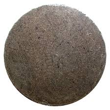
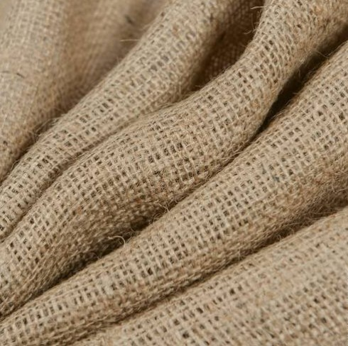
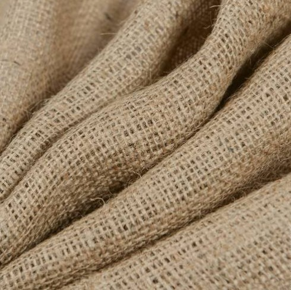
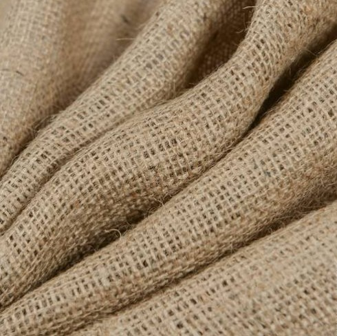

Коно́плі (лат. Cannabis) — рід однолітніх лубоволокнистих рослин родини коноплевих порядку розоцвітих. За давнішими класифікаціями коноплі відносили до шовковицевих (тутових) і кропивних. Терофіт.
Раніше в роді виділялись кілька видів
Коноплі посівні (Cannabis sativa)
Коноплі індійські (Cannabis indica)
Коноплі дикі (Cannabis ruderalis)
Тепер усі вони віднесені до виду конопель посівних.
Серед ботаніків щодо систематики конопель в даний час є дві точки зору. Прихильники першої точки зору слідом за К. Ліннеєм стверджують, що рід коноплі монотипії, тобто містить всього один вид. Інші ж, слідуючи роботам Ж. Б. Ламарка, виділяють, принаймні, два види - «південний» і «північний». Одним з важливих відмінностей між цими видами прихильники другої точки зору вважають переважання наркотичних речовин в південних формах.
Так склалося, що в 1920-1930 роки в СРСР взяла гору друга точка зору. В цей час взагалі було прийнято розуміти види вузько, тобто виділяти безліч видів там, де інші систематики бачили тільки один. Прихильниками подібного дрібного розуміння видів конопель був і М. І. Вавілов, а також його учні. У деяких виданнях російської ботанічної і сільськогосподарської літератури і зараз можна зустріти твердження, що рід конопля складається з трьох видів: конопель звичайної (посівної), індійської і сміттєвої.
Cannabis sativa subsp. sativa - Конопля посівна підвид посівна
Cannabis sativa subsp. sativa var. sativa - Конопля посівна підвид посівна різновид посівна
Cannabis sativa subsp. sativa var. spontanea - Конопля посівна підвид посівна різновид дика
Cannabis sativa subsp. indica (Lam.) E.Small & Cronquist - Конопля індійська
Cannabis sativa subsp. indica var. indica - Конопля посівна підвид індійська різновид індійська
Cannabis sativa subsp. indica var. kafiristanica - Конопля посівна підвид індійська різновид кафірістанская
У цій схемі підвиди розрізняються з точки зору напрямки селекції (волокна і масло або наркотичні речовини). Усередині підвидів кожна пара різновидів є культивовані або дикорослі рослини.
Підвиди конопель. Зліва направо: посівна, індійська, смітна
У 2005 році було опубліковано докладне дослідження конопель, що належить К. Хіллінгу [33], який використовував при цьому новітній метод, заснований на аналізі структури ДНК. Результати проведеного дослідження в цілому підтверджують концепцію Смолл і Кронквіста, однак автор запропонував нове трактування систематики роду коноплі. Грунтуючись на результатах аналізу величезного генетичного матеріалу він стверджує, зокрема, що індійська і посівна коноплі відбуваються з різних центрів різноманітності, спочатку ізольованих один від одного. Таким чином, на думку Хіллінга, поступового переходу між цими формами не існує (принаймні, з генетичної точки зору). Відтак уже немає достатніх підстав розглядати їх як підвиди, а тому вони повинні вважатися окремими видами. Автор йде ще далі і пропонує розрізняти ще два види, які, на його думку, також були ізольовані генетично.
Однак багато систематики вважають, що дослідження Хіллінга не похитнули скільки-небудь грунтовно концепцію однотипної роду конопель, і продовжують дотримуватися найбільш обгрунтованою і поширеною концепції Смолл і Кронквіста.
Відповідно до сучасної класифікації, рід Конопля включає в себе один вид з двома підвидами:
Cannabis sativa subsp. sativa - Конопля посівна
Cannabis sativa subsp. indica (Lam.) E.Small & Cronquist - Конопля індійська
Раніше виділявся третій вид - Конопля бур'яниста (Cannabis ruderalis Janisch.), Але зараз ця комбінація не має самостійного рангу і є синонімом Cannabis sativa subsp. sativa.
Харчова промисловість

Насіння конопель містить 30–35 % олії, 18–23 % білка, 20 % крохмалю, 15 % клітковини, 4–5 % золи. Навіть саме по собі є дуже поживнимб але через свої жахливі смакові якості не вживається у сирому вигляді.
Олія попри свої високі смакові якості, багата на легкозасвоювані жирні кислоти — лінолеву, ліноленову, гамма-ліноленову, що сприяє утворенню гамма-глобуліну, який має протибактеріальні і противірусні тіла. Олія використовується у салатах, при виготовленні кондитерських виробів, випіканні здобного хліба тощо. Добувають її холодним та гарячим пресуванням.

Конопляна макуха( побічний продукт після
вичавлення олії пресуванням з насіння олійних культур ) є
цінним
концентрованим білковим кормом для тварин.
Кілограм макухи за вмістом перетравного протеїну
відповідає 2,9 кг вівса або 3 кг ячменю, 3,1 кг кукурудзи,
15,3 кг картоплі.
Текстильна промисловість

Коноплі є однією з найдавніших технічних
культур людства. Вироби з неї, насамперед
одяг, відомі ще з 1 тисячоліття до н. е..
Волокно конопель довге, грубе, має велику
міцність і не піддається гниттю при
тривалому перебуванні у воді, за що дуже
цінується й по сьогодні. З волокна коноплі
виготовляють брезент, парусину, мішковину,
пожежні рукави(нині це рідкість), канати,
шпагат, шнури, цінний папір. Тканини з
конопель антистатичні(не накопичують на
собі електричний заряд), гігієнічні(не
гниють), поглинають до 30 % поту і 95 %
ультрафіолетових променів. Одяг з
конопель рекомендується щоденно носити
людям схильним до захворювання
ревматизмом, алергією шкіри, хворобами
хребта.

 

.jpg)
.jpg)
.jpg)
.jpg)